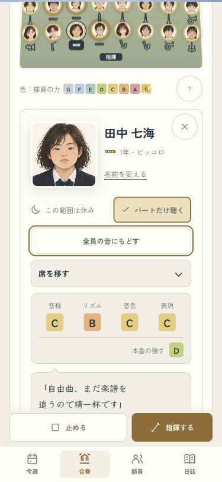
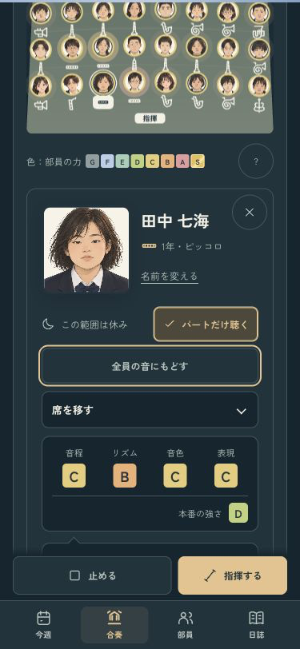
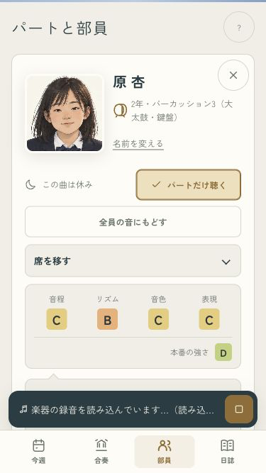
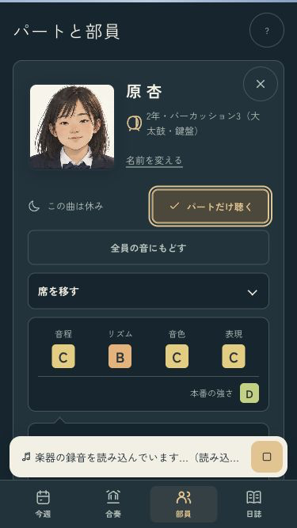

B · 舞台の中へ
休みの子も、舞台の一員。
この区間で吹かない子は「この範囲は休み」に。顔とランクはそのまま、同じパートの仲間に出番があれば、その音を聴けます。


曲全体を休む部員と、小さい画面
375×667。曲全体に出番がなければ「この曲は休み」。パートの読み込み待ちを中止したあと、遅れて鳴ることもありません。


全15曲・57区間・入力の保持・読み込み待ちの中止・1年分の進行を確認済み。
iPhoneへ導入・起動済み。実機の見た目・音・操作感はオーナー側で確認。
ミラーリングなし · codex/design · pushなし · 変更と確認の記録